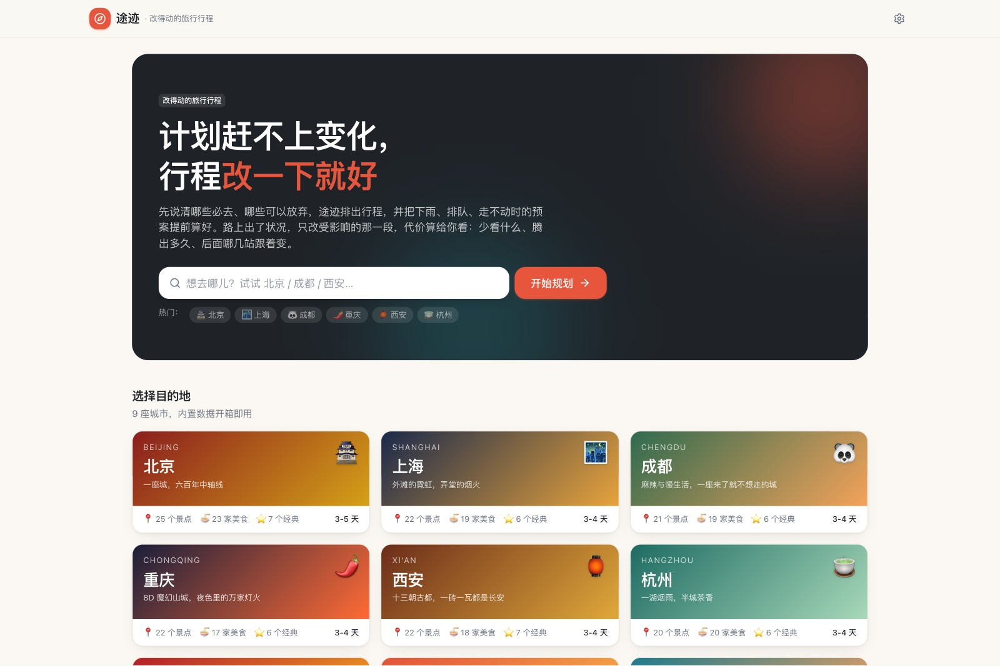

途迹 Tuji Travel
输入一座城市，得到不走回头路、可直接执行的逐日行程：按地理分天、精确最短路径排序、按开放时间排程、沿途配餐。无需注册，行程保存在自己的浏览器里。

点击后在窗口内加载真实应用，可直接生成行程。新窗口打开 ↗

项目背景
和同学做城市自由行攻略时，景点散落在收藏夹和小红书笔记里，先后顺序靠人脑拼。常见结果有三种：走回头路，上午在城东、中午跑城西、下午又回城东；到门口才发现闭馆或当天不开放；到了饭点就近凑合，错过本来想吃的店。
现有攻略 App 擅长"去哪里"，给的是景点列表和评分，但不回答"先去哪、后去哪"。排顺序这件事既机械又容易出错，正好适合交给算法；而"要不要去"这种判断，应该留给用户。
痛点挖掘与定位
| 目标用户 | 典型场景 | 核心诉求 |
|---|---|---|
| 自由行学生 | 2–4 天去一座陌生城市，预算有限，想多看几个地方 | 不走冤枉路，别因为闭馆白跑，吃得顺路 |
| 带家人出行的人 | 节奏要可控，景点间不能太折腾 | 每天的路线一眼能看懂、能改 |
| 美食导向的旅行者 | 景点是顺带的，餐厅是重点 | 午晚餐和下午茶都顺路，且有靠谱的评价 |
判断：核心痛点不在"找景点"而在"排顺序"，于是把产品承诺定为一句话：不走回头路。攻略被拆成五个可验证的步骤，每一步对应一条规则，而不是一个黑盒推荐。
需求分析与优先级决策
需求池按"价值 / 实现思路 / 难度"三栏维护在仓库的 PROGRESS.md 里，分近期、中期、远期三档。决策原则：先把不依赖外部服务的事做完，依赖外部 API 或账号体系的明确后置。
| 档位 | 内容 | 状态 |
|---|---|---|
| 第一优先 | 路线引擎（分天、排序、排程、配餐）与 9 座城市的景点、餐厅数据 | 完成 |
| 近期拓展 | 拖拽排序、饮食偏好、出行方式、多方案对比、分享链接、导出日历、酒店 / 出发点搜索，共 7 项 | 完成 |
| 免门槛 | 访客不填 API Key 也能用 AI 生成任意城市 | 完成 |
| 中期（需外部服务） | 真实路径与公交线路、天气与节假日、景点图片、对话式修改行程 | 后置 |
| 远期（产品化） | 账号与云同步、多人协作、多城市联程、PWA 离线、个性化推荐 | 后置 |
方案产出
路线引擎
- 打分与取舍：按评分、必去、兴趣标签和方案偏好给景点打分，组成兼顾地理紧凑度的候选池。
- 分天：k-means 按位置把景点聚成每一天（最远点初始化），再做簇间平衡：必去优先、时间预算、就近挪动。
- 排序：Held-Karp 精确求每天的最短开放路径，叠加时段偏好惩罚，夜景压轴、上午景点在前。
- 排程：按开放时间排程，闭馆日自动避开，接近闭园时提醒并尝试调整顺序；沿途就近插入午餐、晚餐和下午茶。
- 远郊：离市中心 20 公里以上的景点单独成天，单程时长设上限，往返过久的不硬排。
体验原则：算法给初稿，用户有决定权
- 拖拽调序、上移下移、移除 / 添加景点、换餐厅、重新优化，所有时间自动重算。
- 同一偏好按不同目标出 4 套方案（推荐 / 省时省力 / 省钱 / 打卡多），并排显示景点数、总路程、人均花费、最晚结束，一键切换。
- 偏好显式可设：出行方式、饮食偏好（不吃辣、素食、清真、忌口、人均上限）、出发点（酒店地址或地图点选）。
- 餐厅评价是"一句话总评 + 大家喜欢 / 注意与吐槽 + 适合场景"的中立综合，并附跳转小红书看真实笔记的链接。
开发上线与项目管理
- 版本记录：每个版本在 PROGRESS.md 记录问题、改动与验证方式，路线图随之更新；发布前固定跑类型检查、城市数据校验与构建。
- 数据质量门槛：9 座城市共 198 个景点、172 家餐厅的数据由并行子任务编写，必须通过校验脚本做到 0 错误才能注册进应用；坐标、票价把握不足的条目单独记录。
- 用户反馈闭环：远郊一日游（迪士尼、长城这类）有人爱有人嫌，改成行程里的开关并说明"会单独占一天"；出发点一开始只是模糊的市中心，按反馈加了酒店地址搜索与地图点选，每天从住处出发；有人纠结打车还是步行，于是加了均衡 / 多步行 / 公共交通 / 打车优先四种出行方式，时间估算和交通预算同步变化。
- 成本与安全：为让访客免填 Key，自建 Cloudflare Worker 代理持有站长密钥，按人每日 3 次、全站每日 40 次限流，模型白名单，上游失败退回额度。
- 发布：GitHub Actions 自动构建并发布到 GitHub Pages；中英双语 README、MIT 许可证，开放城市数据贡献。
用户画像测评
对线上版本做了一轮 107 个用户画像的测评（学生、家庭、美食导向、无障碍需求、远郊游客等）：每个画像走一个具体场景，按 10 个维度打分并提出改进建议，再按 P0–P3 归并。均分 4.65 / 5；保存分享、预算决策得分最高，路线排程、餐饮推荐、AI 能力相对偏低；归并出 15 项 P0、45 项 P1。
排在最前面的 P0：忌口 / 过敏 / 清真 / 素食要把"软匹配"和"严格安全要求"分开，不确定时提示人工核实；交通时间标明是估算，优先接真实导航校核；保存后提醒备份、换方案自动快照、支持恢复；分享前提示酒店住址等可能公开的信息并允许匿名化；AI 生成的城市显示剩余额度、来源与时间戳。
结果与迭代
| 指标 | 结果 |
|---|---|
| 内置数据 | 9 座城市、198 个景点、172 家餐厅，全部通过校验 |
| 方案差异（北京 3 日实测） | 推荐 9 景点 ¥1052 → 省钱 ¥806（−23%）→ 打卡多 12 景点 |
| AI 生成任意城市 | 上线当天实测南京：16 个景点，约 2 分钟 |
| 用户反馈迭代 | 远郊一日游开关、酒店精确出发点、四种出行方式对比 |
如实说明：目前还没有留存数据，"规划省了多少时间"也还没有测量。下一步按优先级：
- 处理 15 项 P0，先做忌口安全提示、交通时间标注与行程备份。
- 做 5 人对照测试：同一城市 3 日行程，手工做攻略 vs 用途迹，记录耗时与回头路次数。
- 接入真实路径与公交线路、天气与节假日提示，把"直线 × 系数"的时间估算换成真实路况。
- 补单元测试与 CI，改算法时不再靠手工试跑。
明确未做的边界
- 不做账号与云同步，v1 行程只存本机，分享用链接 + 二维码。
- 不抓取真实评论，餐厅评价是综合整理的中立陈述并标明来源性质。
- 不做多城市联程与多人协作。
技术
Vite 8、React 19、TypeScript、Tailwind CSS 4、Leaflet 地图（高德底图，已做坐标转换）、dnd-kit 拖拽、lz-string 分享编码；Anthropic SDK 结构化输出；Cloudflare Workers 代理；GitHub Actions + GitHub Pages 部署。借助 Claude Code 独立完成全栈开发。